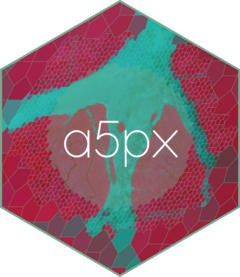

Package index
-
a5_read_raster() - Read a (Cloud-Optimised) GeoTIFF as A5-cell aggregated values
-
a5_read_raster_arrow() - Read a (Cloud-Optimised) GeoTIFF as A5 cells, returning an Arrow Table
-
a5_raster_to_parquet() - Read a raster and write it straight to Parquet (Rust-direct)
-
dequant_aef() - Dequantize Alpha Earth Foundations (AEF) embedding codes
-
a5_raster_info() - Inspect a raster's structure
-
a5px_store_config() - Inspect the object store configuration a source resolves to
-
a5_aggregate() - Aggregate A5-keyed values to a coarser resolution
-
a5px_write_parquet() - Write A5-keyed values to a Parquet file
-
a5px_set_concurrency()a5px_get_concurrency() - Tile-level concurrency for raster reads
-
a5px_set_cache()a5px_cache_info()a5px_clear_cache() - Session cache of remote byte ranges
-
a5pxa5px-package - a5px: Read Raster Data as A5 Cells via Pixel-Driven Aggregation